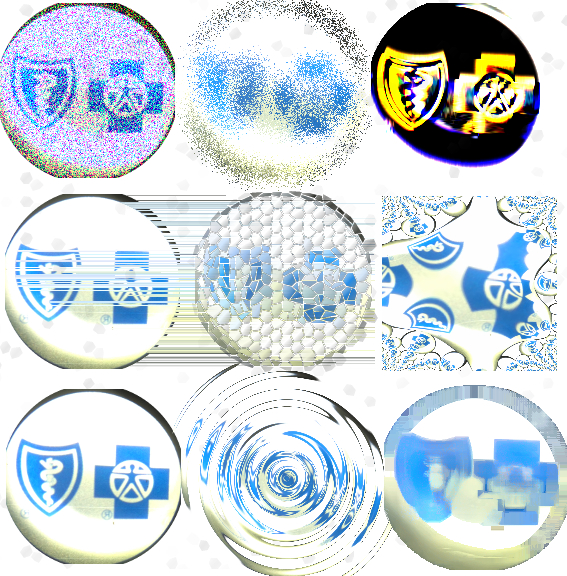
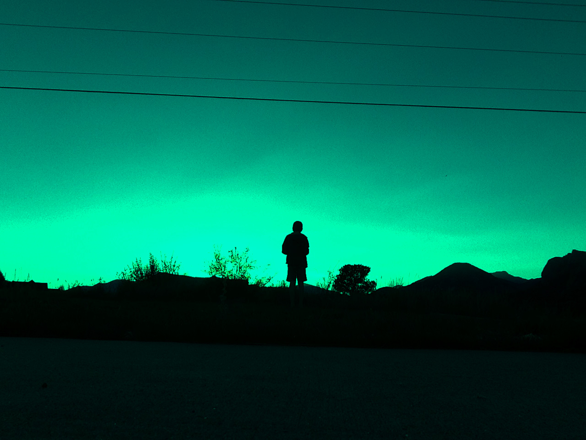
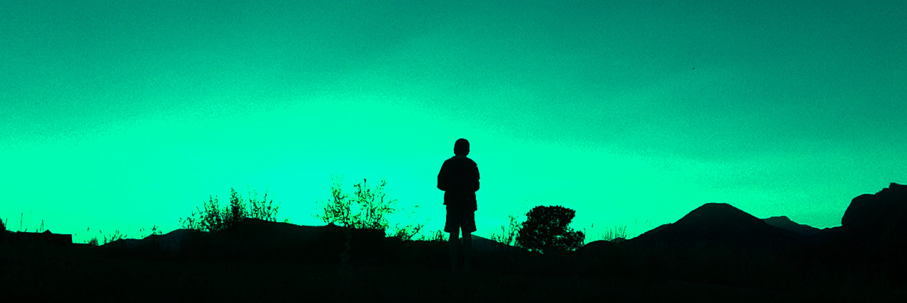
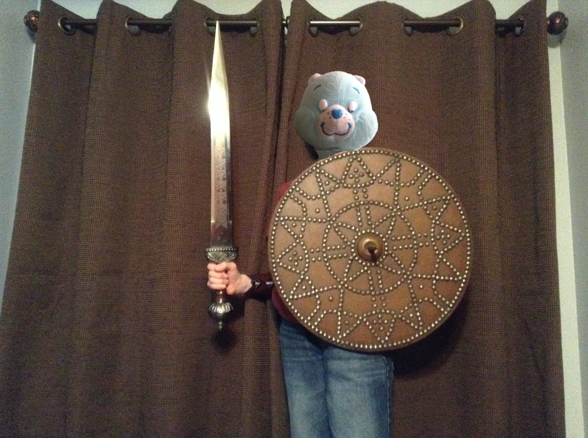
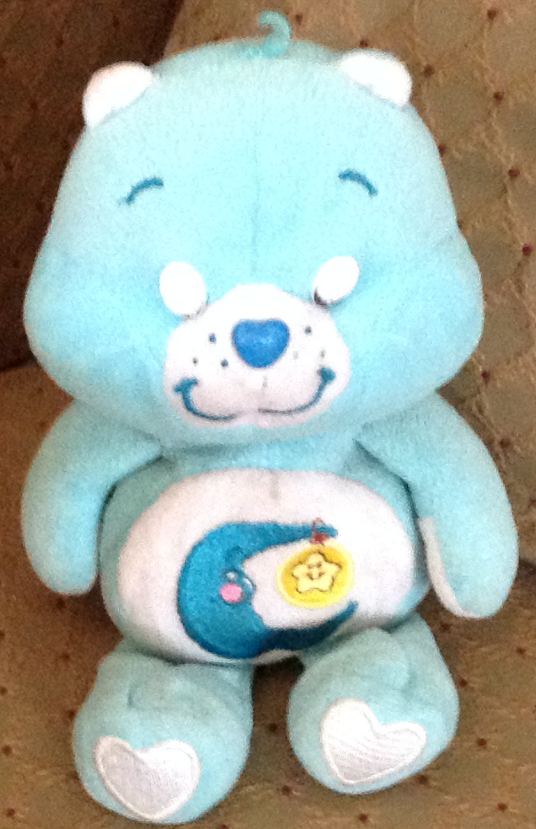
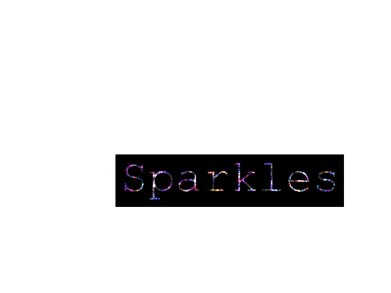
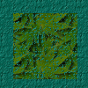

I took a picture of inside a BlueCross BlueShield flashlight, the battery was really low that I could actually take a picture inside the flashlight.
I used the above photo and copied it 9 times and added a different filter to each one.
I went on a walk and took a portrait of myself in the distance with a nice green sunset.
Here I just cropped out the above power lines to make it look better.

On a cold winter night I took this sunset picture.

I then made a separate scaled image that is ideal for thumbnails.

One cold morning I took this picture that was a sunrise with all different colors in it.

In this one I made a drawing of the above photograph.
Bear warrior? I put my bear's photo on top of my brother's face.

A $112 fine for parking? Who is that exact besides me?

I took this colorful picture at my Cousin's birthday party.

I took a picture of my carebear on the dresser bench.
In this one I cropped it so it's more up close.

In this one I took a picture of a weird black trail in the sky.

A close up of the above image

In this one I took a picture of light reflecting off of a CD.

This one I think is by far one of the best sunset pictures I have, purple, red, pink, and yellow are all scattered around.

A better close up of the sunset

I took this picture of some flowers while out on a walk.

In this picture I enhanced the color and cropped it to make it look daytime when it was actually dusk.

A birds-eye-view of more flowers.

In this one I combined the above and below images.

In this one I took a side-view of another flower.

In this one I put the camera through the blue part of the windshield and captured the sun around noon.
In this one I put in RGB noise in the picture to make sparkles.
Here I cropped out the white for a better effect.
Here I made a 100x100 texture tile that is enlarged to 400x400 to show up better in a browser.